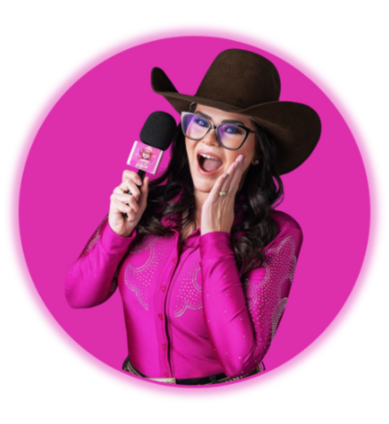
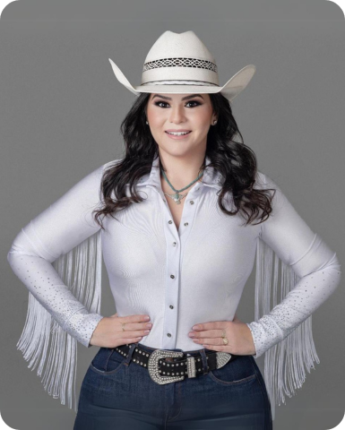

Cobertura e apresentação
Atuação como comunicadora e apresentadora, com entrevistas, bastidores e entradas dinâmicas durante o evento.
- Entrevistas com público e convidados
- Apresentação e conteúdo em tempo real
- Registro dos melhores momentos
Influenciadora e comunicadora para eventos
Natália Quatrina é jornalista, influenciadora, comunicadora e apresentadora de eventos. Com o Nath na Festa, cria entrevistas, bastidores e cobertura em tempo real para aproximar organizadores, marcas, patrocinadores e público.


Quem está por trás do microfone
Sou Natália Quatrina, jornalista formada pela FEF e criadora do Nath na Festa, projeto que nasceu em 2021 para mostrar o que acontece além do palco.
Minha trajetória passa por rádio, assessoria de imprensa, televisão e jornal impresso. Hoje, levo essa bagagem para festas, exposições e ações de marcas com entrevistas leves, informação confiável e conteúdo pensado para as redes sociais.
“Meu jeito de trabalhar, por mais que alguém tente fazer igual, não será igual.”
Comunicação que movimenta o evento
Da primeira chamada ao último bastidor: serviços para organizadores que querem ampliar a visibilidade, envolver o público e valorizar patrocinadores.
Atuação como comunicadora e apresentadora, com entrevistas, bastidores e entradas dinâmicas durante o evento.
Integrações naturais que colocam marcas e patrocinadores dentro da experiência e da conversa com o público.
Roteiro, apresentação e conteúdo vertical para transformar o clima do evento em vídeos ágeis e compartilháveis.
Aperte o play
Expo FernandópolisPor que curtir a Expo?
BastidoresA festa pelo olhar da Nath
EntrevistasGente que faz a festa acontecer
Para organizadores e marcas
O Nath na Festa tem base em Urânia e atende principalmente eventos no noroeste paulista. A proposta combina jornalismo, entretenimento e influência digital para gerar visibilidade antes, durante e depois da festa.
Envie pelo WhatsApp o tipo de evento, cidade, data e o formato de cobertura desejado. A Natália prepara uma proposta adequada ao projeto.
Festas do peão, exposições, shows, eventos culturais, lançamentos, ações promocionais e eventos de marcas.
O projeto tem base em Urânia e atende principalmente o noroeste paulista, com possibilidade de deslocamento para outras cidades e regiões.
Apresentação, entrevistas, bastidores, vídeos verticais, reels, chamadas pré-evento e conteúdo para marcas e patrocinadores.
Contrate para seu evento
Informe o tipo de evento, cidade e data para receber uma proposta de cobertura, apresentação ou ação com influenciadora.
nathnafesta@hotmail.com